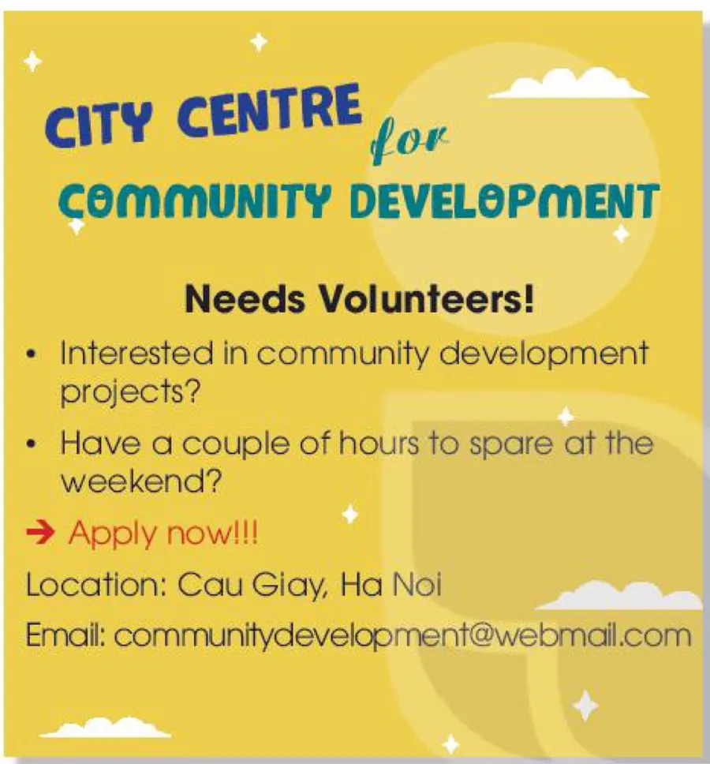

Volunteer positions
Lesson 5 — Listening
4Five stops in 45 minutes
- 📰
Warm-up
Job adverts
4 min - 🔤
Before
Advert + six words
10 min - 🎧
While
Tasks 2 and 3
15 min - 🧑🍳
Game
Volunteer Jobs
6 min - 💬
After
How can you help?
8 min
By the end of this lesson…
- 📰
Predict
Use a job advert to predict what you will hear.
- 🎧
Listen for details
Complete sentences and decide true or false.
- 💬
Discuss
Say how you can help people in your community.
Job adverts
Warm-up
4 minutesWhat do you know about job adverts?
- 📰
What is it?
What is a job advert?
- 📝
What’s in it?
What information is included?
- 📍
Where?
Where can you see job adverts?
Ideas job title · who can apply · time · place · how to apply / contact · deadline — in newspapers, on websites, on noticeboards
Before you listen
Task 1 + new words
10 minutesRead and answer

1. Who needs volunteers? The City Centre for Community Development
2. Who can apply for the job? People who are interested in community development projects and have a couple of hours to spare at the weekend.
Before you listen · 1–2
- announcement (n) /əˈnaʊnsmənt/ thông báo
- position (n) /pəˈzɪʃn/ vị trí, chức vụ
Before you listen · 3–4
- spare (v, adj) /speə(r)/ dành ra; rảnh, dư
- non-profit (adj) /ˌnɒn ˈprɒfɪt/ phi lợi nhuận
Before you listen · 5–6
- deadline (n) /ˈdedlaɪn/ hạn chót
- facility (n) /fəˈsɪləti/ cơ sở vật chất
While you listen
An announcement · page 47
15 minutesListen to the announcement · 1–2
1. This non-profit organisation supports ______ people and communities. B. local
A. remote B. local C. poor
2. They organise job training courses for ______. B. teenagers
A. poor people B. teenagers C. old people
Listen to the announcement · 3–5
3. They are looking for teenagers who can volunteer ______. C
A. on weekdays B. every day C. at the weekend
4. People whose application is successful will be trained by ______ volunteers. A
A. experienced B. helpful C. young
5. Volunteers will have a chance to meet teenagers with ______ interests. C
A. strong B. different C. similar
Correct the false statements · 1–3
- This organisation helps people in the area. TRUE
- Only poor people can get support from the City Centre for Community Development. FALSE Teenagers, lonely old people and others also get support.
- The centre is looking for volunteers now. TRUE
Correct the false statements · 4–5
- The new volunteers will only become members of the local community development network. FALSE local and national network
- The deadline for the application letter is the 1st of January. TRUE
Volunteer Jobs
Game · guess and act
6 minutesAfter you listen
Task 4 · group discussion
8 minutesWhat do you think you can do to help people in your community?
- build houses for poor people
- help lonely old people
- create children’s playgrounds
- donate clothes
- teach younger children
- clean public places
I think I can help … by + V-ing …
This can help them …
What have you learnt today?
Today’s board
Words: announcement · position · spare · non-profit · deadline · facility
Listening: an announcement for volunteer positions — listen for specific information
Homework: workbook Unit 4 Listening; prepare Lesson 6 — Writing (page 48).